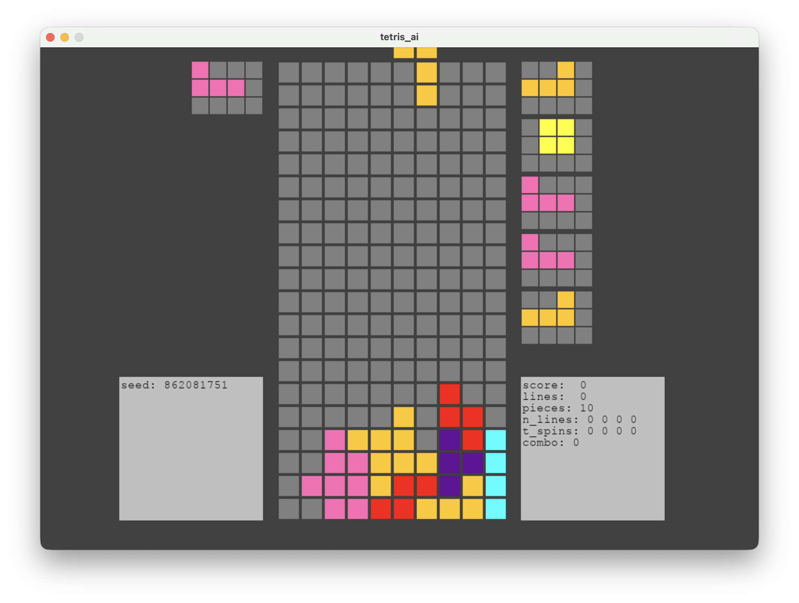

AI Tetris Instructions
Choose your OS:
Introduction
The purpose of these instructions is to teach you how to download an Artificial Agent that plays the game of Tetris using the provided code. Python installation is required, and as such is included in these instructions. These procedures will take about 10-15 minutes to complete.
Disclaimer
We are not responsible for any damage or issues to your computer
caused by improper installation of Python or related dependencies.
Requirements
- A computer with good wifi connection
- Windows x64
- 2.5 GB available space (300MB for Python, ~2GB for dependencies)
Part 1: Python Installation (Windows)
-
Download Python:
-
Open Installer:
- Press the Windows key (open Windows menu)
- Type File Explorer
- Open File Explorer → Click Downloads
- Double-click python-3.12.0-amd64.exe
-
Install Python:
- Check "☑ Add python.exe to PATH"

- Click → Install Now
- Select Disable Path Length Limit
- If prompted, choose to allow changes
Part 2: Install Tetris-AI Repository
- Go to GitHub:
-
Download ZIP:
- Click <> Code ▾, then Download ZIP
-
Extract Files:
- Press the Windows key (open Windows menu)
- Type File Explorer
- Open File Explorer → Click Downloads
- Right-click on Tetris-AI-Master → Click Extract All
- Accept default destination
-
Open Command Prompt:
- Press Windows key + R
- Type cmd, press OK
-
Navigate to folder:
-
Type:
cd Downloads\Tetris-AI-Master\Tetris-AI-Master - Hit enter
-
Type:
-
Install dependencies:
- Type:
pip install -r requirements.txt - Hit enter
Note: Multiple dependencies will begin to install. This may take a few minutes. Do not close the window while they are installing. - Type:
-
Open Tetris AI GUI:
- Type:
python main.py - Hit return
- Type:
Part 3: Train and Play!
-
Train your AI:
- Click "Train your AI"
- Select level (0-15) in the bottom left box
- Click "Start training!"
Note: 0 means no almost no training, 15 is the highest amount of training.- Press "OK" when "Training complete!" appears
-
Watch your AI Play:
- Click "Watch your AI play"
- A window appears; watch your AI play Tetris at the trained level
Note: This may take a few seconds to load.
Requirements
- A computer with good wifi connection
- Mac OS
- 2.5 GB available space (300MB for Python, ~2GB for dependencies)
Part 1: Python Installation (Mac)
-
Download Python:
-
Open Installer:
- Press ⌘ Command + Space (open Spotlight Search)
- Type Finder
- Open Finder → Click Downloads
- Double-click python-3.12.0-macosx.pkg
-
Install Python:
- Click Continue on the first screens
- When propted, Agree to terms
- When propted, Install and verify
- When finished, select Close
Part 2: Install Tetris-AI Repository
- Go to GitHub:
-
Download ZIP:
- Click <> Code ▾, then Download ZIP
-
Extract Files:
- Press ⌘ Command + Space (open Spotlight Search)
- Type Finder
- Open Finder → Downloads
- Double-click Tetris-AI-master.zip in Finder
-
Open Terminal:
- Press ⌘ Command + Space
- Type Terminal
- Open Terminal

-
Navigate to folder:
- Type:
cd Downloads/Tetris-AI-master/ - Hit return
- Type:
-
Install dependencies:
- Type:
pip install -r requirements.txt - Hit return
Note: Multiple dependencies will begin to install. This may take a few minutes. Do not close the window while they are installing. - Type:
-
Open Tetris AI GUI:
- Type:
python main.py - Hit return
- Type:
Part 3: Train and Play!
-
Train your AI:
- Click "Train your AI"
- Select level (0-15) in the bottom left box
- Click "Start training"
Note: 0 means no almost no training, 15 is the highest amount of training.- Press "OK" when "Training complete!" appears
-
Watch your AI Play:
- Click "Watch your AI play"
- A window appears; watch your AI play Tetris at the trained level
Note: This may take a few seconds to load.
Conclusion
You now have a Tetris AI program with capabilities to train and play the game of Tetris independently! Have fun training it to different levels and learning from it as you both play this classical game!
Created for educational use · Updated October 2025